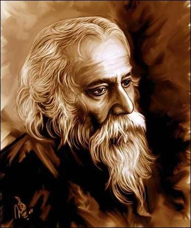
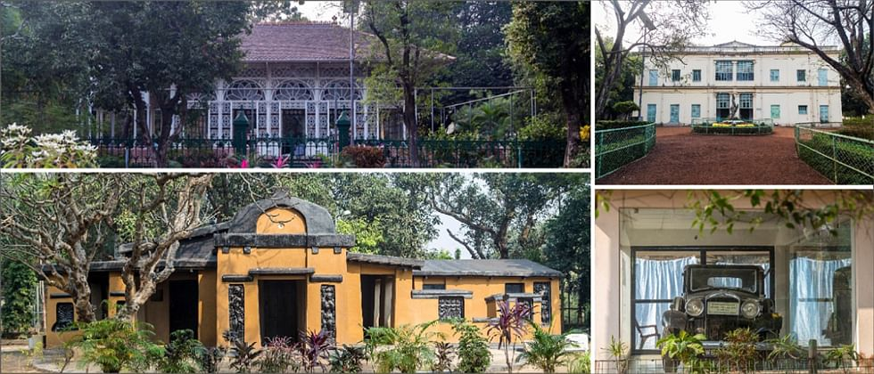
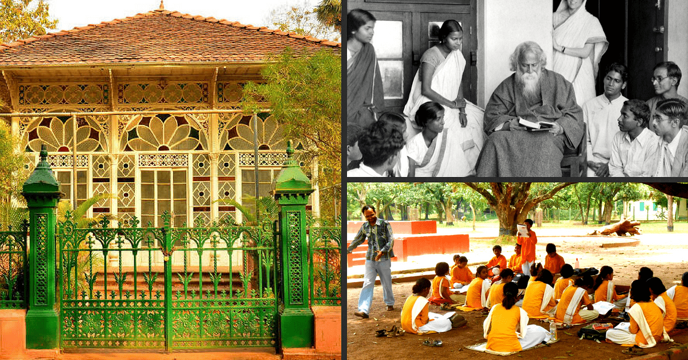
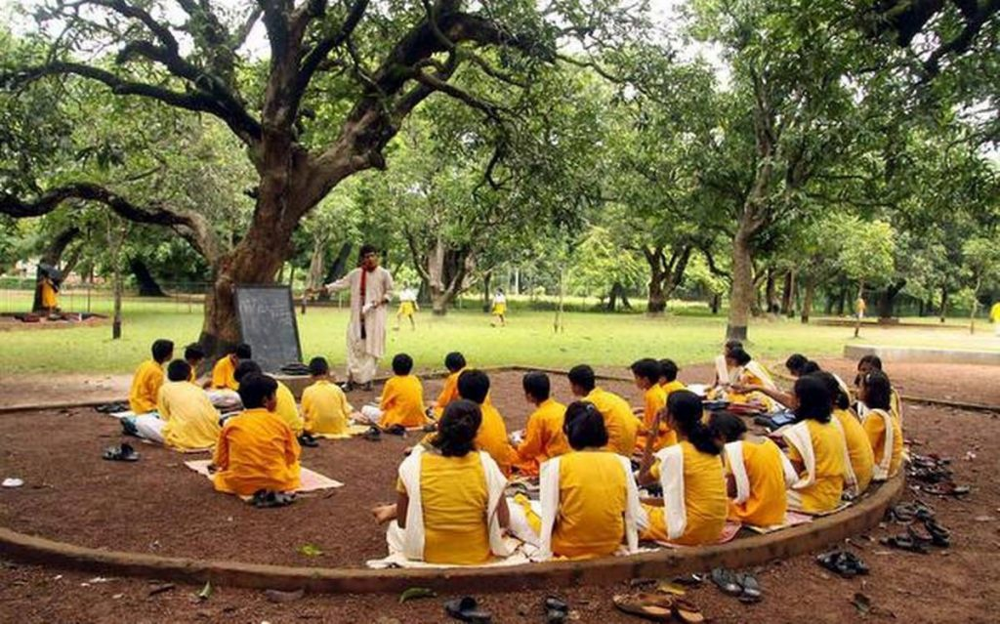
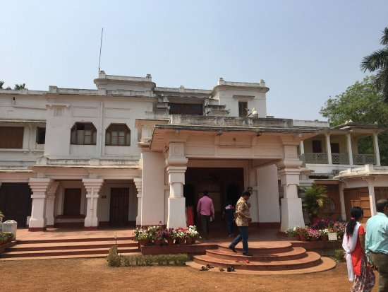
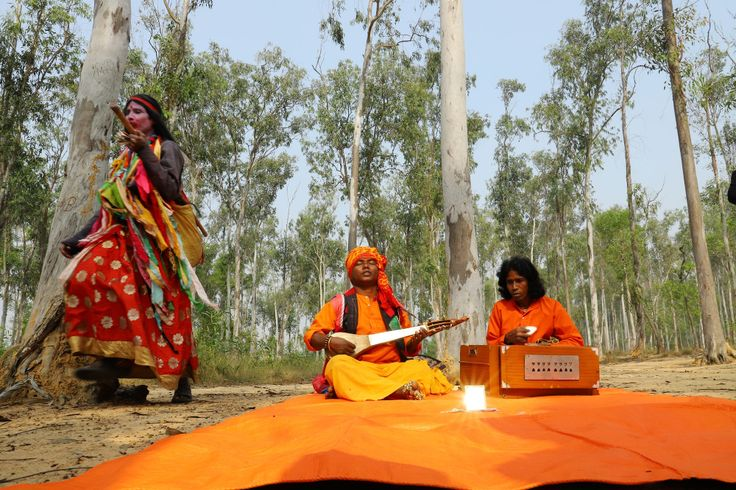

An essential place to visit, Santiniketan is a UNESCO World Heritage Site and the former home to the Nobel Laureate, Rabindranath Tagore. It brims with ideas, knowledge and an intellectual energy. For a traveller, a visit to Santiniketan entails a shift in perception towards knowledge, arts, literature and other finer things of life.
Santiniketan is a neighbourhood of Bolpur city in Bolpur subdivision of Birbhum district in West Bengal, India, approximately 152 km north of Kolkata. It was established by Maharshi Devendranath Tagore, and later expanded by his son Rabindranath Tagore whose vision became what is now a university town with the creation of Visva-Bharati.Shantiniketan was founded and developed by members of the Tagore family. It was founded by Debendranath Tagore. Rabindranath Tagore wrote many of his literary classics at Santiniketan. His son, Rathindranath Tagore was one of the first five students at the Brahmacharya asrama at Santiniketan. After the death of his father in 1941, Rathindranath took over the burden of all responsibilities at Santiniketan. When Visva Bharati was made a central university in 1951, Rathindranath was appointed its first vice-chancellor.
Pratima Devi, Rathindranath's wife, had active links with Visva Bharati from a very young age. She lived in Santinketan till her death in 1969.
Mira Devi, Rabindranath's youngest daughter, after her failed marriage, lived in Malancha built for her in the Ashrama complex in 1926. She died at Santiniketan in 1969. Krishna Kripalani, husband of Nandita (Buri), daughter of Mira Devi, taught at Santiniketan for nearly 15 years, beginning 1933. Krishna Kripalani's biography of Tagore was amongst the best ever written.
Dwijendranath Tagore, Rabindranath's eldest brother, spent the last twenty years of his life at Santiniketan. He lived in Dwaijaviram in the Ashrama complex.
Dinendranath Tagore, Dwijendranath's grandson, was principal of Sangit Bhavana in its earliest years. Dinantika, built in 1939, housed the Cha chakra, where staff members of Visva Bharati met over a cup of tea for meetings and relaxation.
Indira Devi Chaudhurani, daughter of Satyendranath Tagore, started living in Santiniketan in 1941 and took charge of Sangit Bhavana. She was acting vice-chancellor for a short period.
Supriyo Tagore, great grandson of Satyendranath, was a student of Patha Bhavana and Visva Bharati University before going abroad to complete his education. He retired as the longest serving principal of Patha Bhavana. He now runs Sisu Tirtha, an institution for orphans mainly from the economically disadvantaged tribals, near Santiniketan. His son, Sudripta, with wide-ranging experience in the field of education, is also engaged in setting up a school, at Ruppur near Santiniketan, embodying the ideas of Rabindranath.
Best time to visit – July-February
Ideal duration – 1 day
How to reach –
By Air: Kolkata is the nearest airport (160.4 km) to Santiniketan.
By Train: Bolpur (108 km) is the nearest station to Santiniketan.
By Road: Santiniketan enjoys good connectivity by road from Kolkata.



Location:
Shantiniketan is situated at 23.68°N 87.68°E. at an average elevation of 56 metres (187 feet).
The area is flanked on two sides by the rivers, the Ajay and the Kopai. Santiniketan earlier had an extensive forest cover, but substantial soil erosion gave certain areas a barren look, the resulting phenomenon is locally known as khoai. However, as a result of the consistent efforts by botanists, plants and trees from all over India flourish in parts of the town. Although the overall environment of the surrounding areas have changed with time, the core area of Santiniketan has retained its closeness with nature.



Tourism:
Bolpur Shantiniketan railway station is well connected with Sealdah Railway Station, Howrah Station, Kolkata Railway Station, Malda Town, New Jalpaiguri etc of West Bengal & Guwahati Railway Station of Assam.
There is direct AC Volvo bus service of WBTC from Kolkata to Bolpur Shantiniketan (Kolkata-Bolpur-Suri & Suri-Bolpur-Kolkata).
Bus and private cars are available from Kolkata (outstation cab service of Ola Cabs, Uber from Kolkata), Durgapur City Centre Bus Stop, Katwa, Berhampore and soon from Santragachi Railway Station in Howrah.
Foods:
Food is an inseparable element of culture! And if you love getting close to the cultural side of the destinations your visit, knowing and tasting the food dishes of those places would certainly help. Here are some of the most loved Shantiniketan food that you must also taste to know the heart of the city: